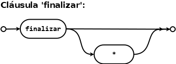
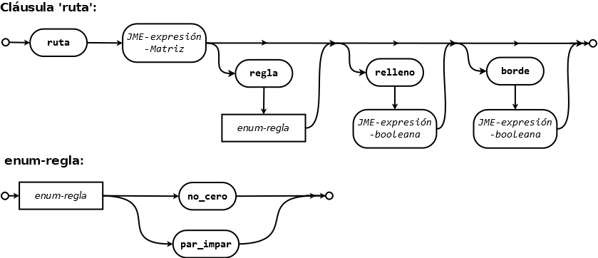
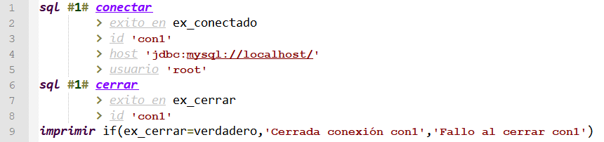

JMEScript es un lenguaje estructurado dinámicamente tipado para la creación de scripts que hacen uso
del lenguaje JME para representación de tipos y expresiones. Es un lenguaje orientado al Cálculo Numérico,
aunque no limitado a éste.
JMEScript es fácil de usar, consta básicamente de;
∎ estructuras de selección; si / si no, si / si no
∎ cuatro tipos de bucles; mientras / para / para cada / repetir hasta que
∎ procedimientos locales y globales con parámetros de entrada y de entrada/salida
∎ variables dinámicas que contienen tipos JME
∎ creación de funciones y operadores JME definidos por el usuario
Puede utilizarse este descriptor de lenguaje definido por el usuario
(UDL)
para Notepad++ que permite usar la sintaxis resaltada utilizada en los ejemplos de esta página.
Sentencias del lenguaje
Las sentencias del lenguaje JMEScript se sitúan cada una en su propia línea del código fuente
del script, aunque se pueden partir en varias líneas con el separador >. Los espacios y tabulaciones iniciales y finales son ignorados, pudiéndose usar el sangrado que se desee.
JMEScript, es case-insensitive, por lo que las palabras reservadas del lenguaje (keywords), variables, rutinas, etc.
pueden escribirse indistintamente en mayúsculas o minúsculas (el convenio usado en la documentación es minúsculas), siendo por tanto
la variable nombre igual a NoMbrE.
Las sentencias que terminan en 'inicio:' son sentencias de bloque, que ejecutan o pueden ejecutar las líneas
debajo de ellas hasta llegar a su sentencia fin correspondiente.
Las expresiones JME en las sentencias se pueden rodear en caso de ambigüedad con dobles llaves; {{3x^2+1}}.
Establecer/Borrar variable
El operador := permite establecer el valor de una o varias variables a un único valor mediante
una expresión JME o eliminar la/s variable/s si no se especifica ninguna expresión:
Diagrama sintáctico:
Salida en consola:
100
falso
[11,10,2,3,12]
<<<ScriptException>>> en la sentencia '[#8: imprimir x]': <<<EvaluarException>>>; identificador "x" no definido. --> ...
Establecer/Borrar múltiples variables
El operador :== permite establecer el valor de varias variables mediante
un vector o un diccionario o eliminar las variables.
Para un vector, los valores se esparcirán sobre las variables (spread operator).
El número de variables debe ser menor o igual que el número de elementos del vector.
Si no se especifica ningún valor, elimina las variables especificadas (al igual que el operador := ).
Para un diccionario, si no se especifican variables, se convertirán las claves a nombres de variable. Si la conversión de clave a
nombre no puede realizarse, se ignorará esa clave (debe ser un identificador JME válido).
Si se especifican variables, se tomarán los valores de las claves con el mismo nombre, sin importar mayúsculas o minúsculas. Si
la clave no existe, la variable se elimina.
Establecer valor de forma mutable en vector o diccionario
El operador de acceso {<idx>} permite modificar/añadir/eliminar un valor
de un vector o diccionario "IN-PLACE", es decir, modificando directamente el objeto vector/diccionario.
Esto puede mejorar la eficiencia en operaciones que requieran modificar grandes matrices o diccionarios sin tener que recurrir a una copia
del objeto, pero lógicamente se debe programar con cuidado como cada vez que se usa programación no funcional (inmutable). JME siempre
trabaja de forma funcional para el usuario, al igual que JMEScript excepto mediante este operador de acceso.
caso vector:
modificar posición; v{3}:=5 modifica la posición 3 del vector a 5
eliminar posición; v{3}:= elimina la posición 3 del vector (reduciendo su tamaño)
modificar rango; v{[2,4]}:=0 establece a 0 las posiciones 2,3,4 del vector
eliminar rango; v{[2,4]}:= elimina las posiciones 2,3,4 del vector (reduciendo su tamaño)
insertar en posición; v{3b}:=5 inserta en la posición 3 del vector un 5, desplazando los elementos siguientes
una posición y aumentando el tamaño. Se debe especificar la posición con un EnteroGrande
caso diccionario:
modificar o crear clave; d{'key'}:=5 crea clave y valor {'key',5} o la modifica
eliminar clave; d{'key'}:= elimina la clave 'key' y su valor si existe, en caso contrario no tiene efecto
La sentencia intercambiar o swap permite intercambiar dos variables sin usar una tercera auxiliar.
La sentencia también intercambia si una variable está indefinida, haciendo que sea la otra la indefinida.
Diagrama sintáctico:
intercambio|swap <var1> [,] <var2>
Salida en consola:
'a' y 'b' intercambiados:
a: 2
b: 1
borrar 'b' e intercambiar con 'a':
b: 2
a indefinido: verdadero
Devolver resultado
La sentencia devolver termina el script y devuelve opcionalmente un resultado.
Si no se especifica el resultado, el valor devuelto es null.
Si se usa esta sentencia dentro de una rutina, termina todo el script (el significado no es el mismo de return en otros lenguajes).
Las rutinas se rompen con romper rutina.
La sentencia si selecciona el código de su bloque según una condición.
Diagrama sintáctico:
Valor devuelto:
'no es primo'
Selección 'Si no, si'
La sentencia si no, si selecciona el código de su bloque según una condición si las
condiciones 'si' y 'si no, si' previas han fallado. Esta sentencia siempre debe seguir
a un bloque 'si', u otro 'si no, si'.
Diagrama sintáctico:
Valor devuelto:
'notable'
Selección 'Si no'
La sentencia si no selecciona el código de su bloque si las
condiciones 'si' y 'si no, si' previas han fallado. Esta sentencia siempre debe seguir
a un bloque 'si' o 'si no, si'.
Diagrama sintáctico:
Ver ejemplo previo de la sentencia si no, si.
Selección de casos 'Seleccionar'
La sentencia seleccionar ejecuta el caso/casos que cumplan con la condición especificada o con el valor dado.
Puede definirse un caso por defecto que se ejecutará en caso de que los demás no se cumplan (en multicaso ejecuta siempre).
Debe definirse al final mediante caso*.
Si se añade * a seleccionar, se utilizará el multicaso, se ejecutarán todos los casos que cumplan la condición
en lugar de sólo el primero que la cumpla.
La sentencia mientras es un bucle pre-condición que repite un bloque de código mientras la condición es verdadera.
Diagrama sintáctico:
Este script añade tiradas de un dado hasta obtener un 6:
Valor devuelto:
[2,5,1,3,5,2,5,3,3,6]
Bucle 'Repetir hasta que'
La sentencia repetir hasta que es un bucle post-condición que repite un bloque de código hasta que la condición es verdadera ejecutando una o más veces.
Diagrama sintáctico:
Este script añade tiradas de un dado hasta obtener un 6 (obsérvese que 'n' no necesita estar definida al principio del bucle):
Valor devuelto:
[3,1,3,6]
Bucle 'Para'
La sentencia para es un bucle contador que repite un bloque de código en el rango especificado.
Pueden usarse números enteros o reales para especificar el rango, aunque los reales pueden acarrear
problemas de precisión.
La sentencia para cada es un bucle que itera sobre elementos JME iterables (elementos de vector,
entradas de diccionario y caracteres de texto).
El bucle permite especificar, además de la variable de iteración que contiene cada elemento particular, una variable contadora.
Si esta variable no está inicializada o está inicializada a un valor no entero, se inicializa a 1 por defecto o al valor especificado.
Diagrama sintáctico:
para cada [<varidx> [:= <idx>] ,] <varname> en <iterable> inicio:
Salida en consola:
'leido un 4'
'leido un 2'
'leido un 7'
'leido un 1'
'leido un 9'
'leido un 0'
La sentencia fin indica el final de un bloque, y debe ir en concordancia
con el inicio de bloque que se desea cerrar. Una sentencia de bloque sin 'fin' o
un 'fin' sin sentencia de bloque provocará un error.
Diagrama sintáctico:
Romper bucle o rutina
La sentencia romper finaliza incondicionalmente un bucle o una rutina.
La sentencia continuar salta a la siguiente iteración del bucle.
Diagrama sintáctico:
Valor devuelto:
'El cielo est entrbicudriquindo'
Asignación binaria implícita
Esta sentencia permite autoasignar implícitamente el resultado de una operación binaria en la que
el valor de la variable es el primer operando.
Es una forma corta del operador de asignación := cuando la expresión es una operación binaria,
por tanto a<operador>=<expresión> es equivalente a a:=a<operador><expresión>
Diagrama sintáctico:
Valor devuelto:
314.1
Asignación unaria implícita
Esta sentencia permite autoasignar implícitamente el resultado de una operación unaria en la que
el valor de la variable es el operando.
Es una forma corta del operador de asignación := cuando la expresión es una operación unaria,
por tanto a<operador> es equivalente a a:=a<operador>
Diagrama sintáctico:
Valor devuelto:
720
Limpiar variables
Esta sentencia actúa como el operador :== cuando elimina las variables del mapa de variables
con la diferencia de que además sugiere al depurador de memoria de JAVA que libere la memoria reservada por la variable.
Esto puede ser especialmente útil con variables que almacenen un valor extremadamente grande y que ya no sean necesarias
en el resto de la ejecución del script. Además puede limpiar todas las variables del ámbito con el modificador *.
Diagrama sintáctico:
Salida en consola:
<<<ScriptException>>> en la sentencia '[#16: imprimir a, b, x, y]': <<<EvaluarException>>>; identificador "a" no definido. --> ...
Definir función JME de usuario
Esta sentencia establece una función JME definida por el usuario.
Las funciones definidas en el script permanecen en el mapa de funciones de JME al terminal
el script, por lo que pueden usarse scripts como bibliotecas de funciones.
Esta sentencia establece un operador unario o binario JME definido por el usuario.
Los operadores definidos en el script permanecen en el mapa de operadores de JME al terminal
el script, por lo que pueden usarse scripts como bibliotecas de operadores.
Esta sentencia crea una rutina o procedimiento. Las rutinas JMEScript no devuelven un valor
como las funciones, pero permiten la entrada y salida de datos mediante parámetros formales
de entrada y entrada/salida (precedidos por var). Las rutinas pueden ejecutarse mediante
la sentencia llamar a.
Las rutinas pueden definirse en cualquier punto del programa y ser llamadas en cualquier punto,
no siendo necesario definirlas antes de llamarlas. En los ejemplos de esta página se sigue el
convenio de definirlas al principio. También se pueden anidar (definir una dentro de otra) para
indicar simbólicamente que una es auxiliar de otra, pero para el compilador es indiferente el lugar
de declaración, son igualmente visibles en todo el script.
Los parámetros formales son variables solo definidas en el ámbito de la rutina. En una rutina no
global, toda variable definida dentro de la rutina es local a la rutina. Las variables del programa
principal no son accesibles en la rutina.
Los parámetros formales de entrada no incluyen el modificador var,
y permiten la entrada de valores a la rutina.
Los parámetros formales de E/S están precedidos por var y permiten
introducir valores mediante una variable inicializada (opcionalmente) y devolver un
valor a través de esa variable.
Una rutina termina al finalizar su bloque de código, o al usar la sentencia romper rutina, o
al usar la sentencia devolver, pero esta última termina todo el script, no solo la rutina.
Nota: antes de definir una rutina JMEScript es preferible comprobar si existe
alguna expresión JME que realice fácilmente la misma tarea. Por lo general será más simple
y mucho más eficiente.
Las rutinas o procedimientos globales (usan la cláusula global) difieren de las anteriores en que pueden acceder y modificar las
variables del ámbito en el que son llamadas, además de poder definir nuevas variables en su cuerpo.
Si son llamadas desde el TOP-LEVEL pueden acceder a la variables de éste, si se llaman
desde otra rutina, pueden acceder a las de ésta.
Si se define una variable nueva en una rutina global, será visible también en el ámbito previo.
El comportamiento de los parámetros formales es idéntico al de las rutinas "locales".
Salida en consola:
var_outer visible en inner: 100
var_inner visible en outer: []
var_inner no visible en TOP-LEVEL
var_inner visible en TOP-LEVEL: []
La sentencia llamar a ejecuta una rutina JMEScript.
La cláusula llamar a es opcional, basta con el nombre de la rutina, pero clarifica para no confundir
con funciones JME. Pueden verse ejemplos en la sentencia anterior de creación de rutina.
Las sentencias intentar y capturar permiten controlar excepciones ocurridas en el bloque de código dentro de intentar,
equivalentemente a los bloques try/catch de la mayoría de lenguajes.
El bloque capturar puede opcionalmente capturar en una variable un diccionario con la información de la excepción, con las claves
tipo, exmsg, sentencia, linea, causa
Diagramas sintácticos:
intentar inicio:capturar [en <varname>] inicio:
Cuatro salidas en consola:
Aseveración errónea:
<<<AssertException>>> en condicion "'Hola'='HOLA'"
ScriptException:
{ 'tipo': 'jme.script.ScriptException'
'causa': '__null__'
'exmsg': '<<<ScriptException>>> en la sentencia [#11: a, b :== [1]]: Imposible esparcir, el nº de variables es '2' y los valores '1''
'sentencia': 'a,b:==[1]'
'linea': 11 }
error no esperado:
{ 'tipo': 'jme.script.ScriptException'
'causa': {'tipo'='jme.excepciones.EvaluarException', 'causa'='__null__', 'exmsg'='<<<EvaluarException>>>; identificador "x" no definido.'}
'exmsg': '<<<ScriptException>>> en la sentencia [#8: imprimir x]: <<<EvaluarException>>>; identificador "x" no definido.'
'sentencia': 'imprimir x'
'linea': 8 }
Operación no válida:
<<<OperacionException>>> en operador [ + ] : operacion no definida --> (RealDoble:3)+(Texto:'')
Imprimir en salida por defecto
Esta sentencia vuelca valores en el 'stream' especificado (por defecto System.out).
Si se usa sin ningún argumento imprime un salto de línea. Una coma al final evita el salto de línea al terminar.
La cláusula vertical imprime las entradas separadas por saltos de línea en lugar de doble espacio.
Para matrices y diccionarios, la salida es en formato vertical (más legible).
La cláusula msj imprime el tipo texto sin comillas, para el resto de datos no tiene efecto.
Nota: la salida por defecto es System.out, puede modificarse con el método Script#setSalida.
Ejemplo de 'imprimir'
en horizontal:
2 3 4
en vertical:
-1
-2
-3
matriz de escalada en vertical:
| 2 0 0 |
| 0 3 0 |
| 0 0 1 |
diccionario en vertical:
{ 'a': 3
'b': 100
'c': 21 }
'FIN'
Lectura desde entrada por defecto
Esta sentencia lee una cadena en el 'stream' especificado (por defecto System.in).
La cadena leída se evaluará y asignará a la variable especificada. Si se añade el modificador
cadena, la cadena se convertirá a texto sin evaluar, y no serán necesarias comillas.
Si se añade el modificador exp, la cadena se convertirá en una expresión que se evaluará
cada vez que se utilice la variable.
Si hay un error en la expresión, la variable quedará indefinida (incluso si antes estaba definida).
Se puede especificar un mensaje en la salida al pedir el dato.
Notas: para que esta sentencia funcione, la entrada por defecto del script debe permitir la
introducción de datos por el usuario (mediante consola, diálogo, ...). El script estará detenido hasta la
introducción del dato.
Evalúa una expresión sin asignar resultado (v0.1.1).
Diagrama sintáctico:
Pausar script
Pausa el hilo de ejecución del script. Sólo puede ser reanudado desde otro hilo mediante el método JAVA Object#notify.
Diagrama sintáctico:
Asegurar
Esta sentencia lanza una excepción o un mensaje dado en caso de que no se cumpla una condición (assert sentence).
Diagrama sintáctico:
asegurar <condición> [msj <mensaje>]
Salida en consola:
No es primo
jme.script.ScriptException: <<<ScriptException>>> en la sentencia [#5: asegurar primo(10)]: Error al asegurar [primo(10)]
at jme.script.Asegurar.ejecutar(Asegurar.java:116)
at jme.script.Script.ejecutar(Script.java:345)
at jme.script.ScriptThread.run(ScriptThread.java:99)
Sentencia vacía
Sentencia vacía, es equivalente a una línea en blanco.
Diagrama sintáctico:
VarMap
Esta sentencia permite acceder/modificar el mapa de variables.
obtener COPIA del mapa: varmap en vm copia el mapa de variables en vm
obtener valor: varmap 'x' en v obtiene el valor de 'x' en v si existe, en caso
contrario no tiene efecto
borrar variable: varmap borrar 'x' borra variable x si existe,
en caso contrario no tiene efecto
establecer/modificar valor: varmap 'x':=100 establece x a 100
Ejecuta las primitivas gráficas 2D de JMEScript; dibuja líneas, polígonos, puntos,… , muestra mensajes de usuario,
entrada de datos de usuario, lectura de pulsaciones, toques/clicks, ….
Para ejecutar esta sentencia debe estar definido un contexto gráfico en el sistema que ejecute JME/JMEScript.
En JMEScriptGUI para escritorio pueden ejecutarse
todas las primitivas. En el apartado para desarrolladores se explica como implementar un contexto gráfico para JMEScript
a partir de la clase AbstractPrimitivas2D.
Diagrama sintáctico:
ctx2d [#<indice-lienzo>#] <claúsula-ctx2d>
El índice del lienzo por defecto es 1, e indica el lienzo a utilizar en caso de múltiples lienzos en el script.
+ Cláusula iniciar
La cláusula iniciar inicializa el contexto gráfico (típicamente crear un lienzo para el dibujo y mostrarlo).
Permite definir el tamaño, posición y título del lienzo que lo contiene.
Diagrama sintáctico: iniciar <ancho> <alto> [posicion <posicion>] [titulo <titulo>]Snippet de código de ejemplo de juego de bola móvil (ver ejemplos) Salida en JMEScriptGUI (escritorio)
La cláusula finalizar finaliza el contexto gráfico (típicamente cierra el lienzo o lo inhabilita) especificado.
También permite cerrar todos los lienzos si hay más de uno con *.
Diagrama sintáctico:

finalizar [*]Snippet de código de ejemplo de juego de bola móvil (ver ejemplos)
+ Cláusula color
Establece el color de línea, de relleno y fondo del lienzo.
El color puede establecerse mediante
un vector [rojo,verde,azul] o [rojo,verde,azul,trasparencia],
con valores [0-255]
una cadena de color HTML, ejemplo: '#3F2AB0', '#FFFFFF77'
un entero RGBA de 32 bits con el patrón
[bit 31]■■■■■■■■
■■■■■■■■
■■■■■■■■
■■■■■■■■[bit 0]
Si no se establece un determinado color, se mantiene el valor previo.
Diagrama sintáctico: color [linea <color>] [relleno <color>] [fondo <color>]Ejemplo que dibuja dos rectángulos de diferentes colores en diferentes formatos de color Salida en JMEScriptGUI (escritorio)
+ Cláusula gradiente
Aplica un gradiente de color lineal o radial a relleno y trazo.
El inicio y final indican el comienzo del primer color y último en gradiente lineal o centro y foco en radial.
Las fracciones y colores son vectores de la misma dimensión conteniendo las longitudes ponderadas de cada patrón de color.
El ciclo repite, refleja, o ninguna de las dos, el patrón.
La matriz aplica una matriz de transformación al patrón (por defecto la identidad).
Diagrama sintáctico: gradiente inicio <posición> final <posición> [radio <radio>] fracciones <fracciones> colores <colores> [ciclo <ciclo>] [matriz <matriz>]Ejemplo de gradiente Salida en JMEScriptGUI (escritorio)
+ Cláusula trazo
Establece el grosor y tipo de trazo de las líneas en las formas geométricas.
Nota: el grosor se ve afectado por la escala de la matriz de transformación.
Si no se establece un determinado parámetro, se mantiene el valor previo, excepto si sólo se especifica grosor, que establece a 'redondo'
los extremos y uniones y elimina el rayado (el rayado también se elimina con [0]).
Los valores otro1, otro2, otro3 permiten ampliar la implementación estándar (no tienen efecto en JMEScriptGUI).
Diagrama sintáctico:
trazo grosor <grosor> [extremo <extremo>] [union <union>] [inglete <inglete>] [raya <raya] [fase <fase>]Ejemplo de distintos trazos Salida en JMEScriptGUI (escritorio)
+ Cláusula punto
Dibuja un punto en el lienzo.
Cuatro tipos de puntos pueden dibujarse en la implementación estándar; pixel, rombo, cruz, mira.
El valor por defecto es pixel.
Los valores otro1, otro2, otro3 permiten ampliar la implementación estándard (no tienen efecto en JMEScriptGUI).
Diagrama sintáctico: punto <posicion> [tipo <tipo>]Ejemplo de 4 tipos de puntos Salida en JMEScriptGUI (escritorio)
+ Cláusula segmento
Dibuja un segmento en el lienzo.
Los parámetros inicio y final determinan los extremos del segmento.
Diagrama sintáctico:
segmento inicio <extremo> final <extremo>Ejemplo de cláusula segmento Salida en JMEScriptGUI (escritorio)
+ Cláusula rectangulo
Dibuja un rectángulo en el lienzo.
Los parámetros inicio y final determinan las esquinas superior izquierda e inferior derecha respectivamente.
El parámetro esquina acepta un vector [semiejeX,semiejeY] que permite definir bordes redondeados.
relleno y borde son flags que indican si se dibuja el interior y la frontera del rectángulo
respectivamente (por defecto, borde es verdadero si no se especifica relleno).
3d indica el tipo de de relieve (resaltado, grabado o ninguno (defecto)).
Los valores otro1, otro2, otro3 permiten ampliar la implementación estándar (no tienen efecto en JMEScriptGUI).
Diagrama sintáctico:
rectangulo inicio <esquina_sup_izq> final <esquina_inf_der> [esquina <radio_esquinas>]
[relleno <relleno>] [borde <borde>] [3d <resaltado>]Ejemplo de cláusula rectangulo Salida en JMEScriptGUI (escritorio)
+ Cláusula circunferencia
Dibuja una circunferencia, círculo o arco en el lienzo.
Diagrama sintáctico:
circunferencia centro <centro> radio <radio> [angulo <angulo_ini>]
[arco <long_arco>] [cierre <tipo_cierre>] [relleno <relleno>] [borde <borde>]Ejemplo de cláusula circunferencia Salida en JMEScriptGUI (escritorio)
+ Cláusula elipse
Dibuja una elipse en el lienzo.
Diagrama sintáctico:
elipse inicio <esquina_sup_izq> final <esquina_inf_der> [relleno <relleno>] [borde <borde>]Ejemplo de cláusula elipse Salida en JMEScriptGUI (escritorio)
+ Cláusula poligono
Dibuja un polígono en el lienzo.
Las coordenadas se introducen mediante un vector de coordenadas X y un vector Y (de la misma dimensión).
La cláusula cerrar a falso permite dejar abierto el polígono en los extremos (defecto verdadero).
Diagrama sintáctico:
poligono coordx <coordx> coordy <coordy> [cerrar <cerrar>] [relleno <relleno>] [borde <borde>]Ejemplo de cláusula poligono Salida en JMEScriptGUI (escritorio)
+ Cláusula ruta
Dibuja una ruta genérica en el lienzo a partir de diferentes acciones.
La ruta se establece mediante una matriz nx2 en que cada fila especifica la acción y un vector de puntos 2D: | <acción1> <puntos1> |
| <acción2> <puntos2> |
| <acción3> <puntos3> |
…
| <acciónN> <puntosN> |
Las acciones y puntos se especifican mediante:
'mover_a': y el punto al que se desplaza el pincel sin dibujar en forma de matriz [[x1,y1]]
'linea_a': y el punto al que se desplaza el pincel dibujando una línea en forma de matriz [[x1,y1]]
'cuad_a': y los dos puntos que completan la curva de tres puntos en forma de matriz [[x1,y1],[x2,y2]]
'curva_a': y los tres puntos que completan la curva de cuatro puntos en forma de matriz [[x1,y1],[x2,y2],[x3,y3]]
'cerrar': cierra la curva si es cerrada especificando un vector vacío
regla especifica la regla de determinación del interior (winding-rules), sus valores son 'no_cero' o 'par_impar' (por defecto)
Diagrama sintáctico:

ruta <matriz-acciones> [regla <regla>] [relleno <relleno>] [borde <borde>]Ejemplo de cláusula ruta Salida en JMEScriptGUI (escritorio)
+ Cláusula texto
Dibuja y mide texto en el lienzo.
El parámetro dimension en devuelve un vector [ancho,alto] con el tamaño del texto en la variable especificada.
Si no se especifica un parámetro relativo a la fuente, se mantiene el actual.
La cláusula estilo toma los valores plano, negrita, cursiva, neg_cur. Los valores
otro1, otro2, otro3 permiten ampliar la implementación estándar (no tienen efecto en JMEScriptGUI).
Diagrama sintáctico:
texto [posicion <posicion>]|[dimension en <varname>] [tama <tamaño>] [familia <familia>] [estilo <estilo>]Ejemplo de cláusula 'texto' Salida en JMEScriptGUI (escritorio) Ejemplo de sombreado Salida en JMEScriptGUI (escritorio)
+ Cláusula repintar
Redibuja el lienzo con los últimos cambios
Diagrama sintáctico:
repintarEjemplo de cláusula 'repintar' Salida en JMEScriptGUI (escritorio)
+ Cláusula limpiar
Borra el lienzo o una parte de él con el color de fondo o el color especificado.
Si no se especifica el color se tomará el color de fondo.
Si no se especifica la posición inicial y final, se limpia todo el lienzo.
Diagrama sintáctico:
limpiar [inicio <posicion> final <posicion>] [color <color>]Ejemplo de cláusula 'limpiar' Salida en JMEScriptGUI (escritorio)
+ Cláusula matriz
Establece la matriz de transformación del lienzo u obtiene la actual matriz del lienzo en formato de vector de 6 elementos.
La matriz puede establecerse de cuatro formas:
matriz normalizada de 3x3:
| sx shx tx |
| shy sy ty |
| 0 0 1 |
matriz 2x3:
| sx shx tx |
| shy sy ty |
vector de 4 elementos (sin traslación):
[ sx shy shx sy ]
vector de 6 elementos:
[ sx shy shx sy tx ty ]
Si se añade el modificador *, la matriz especificada se premultiplicará a la actual
Diagrama sintáctico:
{matriz|matriz* <matriz>|<vector>}|{matriz en <varname>}Ejemplo de cláusula 'matriz' Salida en JMEScriptGUI (escritorio)
+ Cláusula entorno
Devuelve un diccionario con información del sistema, del lienzo, del lenguaje JMEScript y el parser JME
(no es necesario que el lienzo esté inicializado)
posicion: vector bidimensional con la posición en el lienzo (no tiene en cuenta transformaciones)
posicion_en_pantalla: vector bidimensional con la posición respecto al dispositivo
timestamp: marca de tiempo del evento
rotaciones: rotaciones de la rueda (positivas o negativas), solo para evento WHEEL
Si no hay ningún evento, la variable queda indefinida.
La cláusula consumir elimina todos los eventos actuales o si se especifica un número de no descartados,
elimina todos los eventos excepto los especificados. consumir 1 mantiene el último evento, consumir 0 es igual a consumir.
Diagrama sintáctico:
click [en <varname>]|[consumir [<eventos>]]Snippet de cláusula 'click' del script garabatos.jmes Salida en JMEScriptGUI (escritorio)
Captura eventos de teclado.
También permite ignorar todos los eventos encolados en ese momento o parte de ellos.
El valor almacenado en la variable es un diccionario con la información del evento de teclado:
keycode: código asociado al evento
modifiers: modificadores del evento;
Valor
Constante Java
Constante JME
64
AbstractKeyStroke.SHIFT
_shift_
128
AbstractKeyStroke.CONTROL
_control_
256
AbstractKeyStroke.META
_meta_
512
AbstractKeyStroke.ALT
_alt_
1024
AbstractKeyStroke.BUTTON1
_button1_
2048
AbstractKeyStroke.BUTTON2
_button2_
4096
AbstractKeyStroke.BUTTON3
_button3_
8192
AbstractKeyStroke.ALT_GRAPH
_alt_graph_
Ejemplo, comprobar mayúsculas y alt;tecla;#;'modifiers' = (_shift_|_alt_)
modifierstext: descripción textual de los modificadores.
Nota: esta representación es dependiente de la plataforma y el idioma, y no debería usarse
para controlar el flujo del script
keychar: Carácter Unicode asociado al evento (puede estar indefinido)
iskeyreleased: verdadero si el evento ocurre al soltar
timestamp: marca de tiempo del evento
esaccion: verdadero si es evento de acción (SHIFT, CONTROL, NUMPAD,…)
localizacion: localización para teclas dobles; [ESTANDAR,DERECHA,IZQUIERDA,NUMPAD,DESCONOCIDA]
Si no hay ningún evento, la variable queda indefinida.
La cláusula consumir elimina todos los eventos actuales o si se especifica un número de no descartados,
elimina todos los eventos excepto los especificados. consumir 1 mantiene el último evento, consumir 0 es igual a consumir.
Diagrama sintáctico:
pulsacion [en <varname>]|[consumir [<eventos>]]Snippet de cláusula 'pulsacion' del script 2048.jmes Salida en JMEScriptGUI (escritorio)
Muestra mensajes al usuario por el intefaz gráfico.
Los mensajes toast se mostrarán el tiempo especificado en milisegundos.
En JMEScriptGUI, los tipos debug y confirm son idénticos a info y ok
sólo está disponible para toast, en caso contrario también es idéntico a info. El tipo por defecto es info.
La posición sólo está disponible para toast, si no se especifica, aparece centrado-abajo. Los tipos otro1, otro2 y
otro3 no forman parte del estándar y permiten ampliar la funcionalidad.
Diagrama sintáctico:
msj <msj> [tipo <tipo>] [posicion <posición>] [toast <tiempo>]Ejemplo de cláusula 'msj' Salida en JMEScriptGUI (escritorio)
+ Cláusula leer
Permite al usuario introducir información a través del interfaz gráfico.
tipo booleano; hace una pregunta SI/NO y devuelve Booleano,
tipo texto; lee un texto y devuelve Texto,
tipo expresion; lee una expresión JME, la evalúa con las variables actuales del script y devuelve el resultado,
tipo opciones; ofrece un grupo de opciones y devuelve la escogida como Texto
Los tipos otro1, otro2 y otro3 no forman parte del estándar y permiten ampliar la funcionalidad.
Si la entrada de datos se cancela, se obtiene la constante de error __error1__. Si se produce un error, se obtiene la constante
__error2__ (véase ejemplo).
Diagrama sintáctico:
leer en <varname> [tipo <tipo>] [opciones <opciones>] [msj <mensaje>]Ejemplo de cláusula 'leer' Salida en JMEScriptGUI (escritorio)
+ Cláusula archivo
Muestra un diálogo del sistema de archivos para la selección de uno o varios archivos/directorios.
Si no se especifica la ruta se toma la ruta por defecto del sistema. Si se usa la cadena vacía, la ruta de la última ejecución (si la hay).
El valor devuelto es un vector con las rutas de los archivos/directorios seleccionados. Si se cancela o no se selecciona ninguno, devuelve un vector vacío.
Diagrama sintáctico:
archivo en <varname> [ruta <ruta>] [titulo <titulo>]Ejemplo de cláusula 'archivo' Salida en JMEScriptGUI (escritorio)
Sentencia de acceso a SGBDR
Permite conectar a una base de datos, cerrarla, acceder a la información y modificar datos.
Para ejecutar esta sentencia debe estar definido un SGBDR en el sistema que permita ejecutar todas sus primitivas mediante JMEScript.
En JMEScriptGUI para escritorio pueden ejecutarse
todas las primitivas usando MySQL y el Conector-J. En el apartado para desarrolladores se explica como implementar un interfaz de conexión entre la base de datos y JMEScript
a partir de la clase AbstractSql.
Diagrama sintáctico:
sql [# <indice> #] <claúsula_sql>
El índice del SGBDR por defecto es 1, e indica el SGBDR a utilizar en caso de múltiples gestores.
Ejemplo completo: visor SQL para la lectura secuencial de consultas
+ Cláusula conectar
La cláusula conectar permite especificar el host, usuario (si existe), y clave (si existe) de la conexión a la BD,
además de asignarle un identificador (puede ser cualquier valor JME).
El valor almacenado en la variable de la subcláusula exito en es verdadero
si la conexión es correcta, si no lo es, se almacena un texto con el mensaje de error
Diagrama sintáctico:
conectar exito en <varname> id <id_conexión> host <host> [usuario <user>] [clave <password>] Ejemplo de cláusula 'conectar'
Salida en consola:
- host falso:
'Communications link failure
The last packet sent successfully to the server was 0 milliseconds ago. The driver has not received any packets from the server.'
- necesario usuario:
'Access denied for user '[...]'@'[...]' (using password: NO)'
- conexión válida:
verdadero
+ Cláusula ejecutar
La cláusula ejecutar efectúa una consulta contra la base de datos.
La cláusula toma el identificador de la conexión en id y asigna un identificador de consulta en sentencia (cualquier valor JME).
El valor almacenado en la variable de la subcláusula exito en es un booleano si la consulta es correcta,
si no lo es, se almacena un texto con el mensaje de error. El valor booleano es verdadero si la consulta
es de selección, y falso si es de acción
Diagrama sintáctico:
ejecutar exito en <varname> id <id_conexión> sentencia <id_sent> consulta <consulta_sql> Ejemplo de cláusula 'ejecutar'
Salida en consola:
- consulta 1:
falso 'consulta de acción'
- consulta 2:
verdadero 'consulta de selección'
- consulta 3:
'Table 'ej6_catastro_municipal.inexistente' doesn't exist'
- consulta 4:
'You have an error in your SQL syntax; check the manual that corresponds to your MariaDB server version for the right syntax to use near 'desde vivienda' at line 1'
+ Cláusula resultado
La cláusula resultado lee secuencialmente los registros o número de actualizaciones de una consulta a partir del identificador de consulta.
La cláusula toma el identificador de la conexión en id y el identificador de consulta en sentencia
de la sentencia ejecutar.
La subcláusula columnas permite especificar la columnas devueltas en una selección. Columnas individuales se especifican con el nombre
de la columna (ej. 'nombre'), múltiples con un vector de columnas (ej. ['nombre','apellidos']).
Por defecto es '*', que muestra todas las columnas especificadas en la consulta.
El valor almacenado en la variable de la subcláusula registro en es
un diccionario si la lectura de una consulta de selección es correcta,
un entero si es una consulta de acción correcta,
valor nulo si se ha terminado la lectura del conjunto de resultados,
un texto distinto de nulo con el mensaje de error si ha ocurrido un error en la lectura
Diagrama sintáctico:
resultado id <id_conexión> sentencia <id_sent> [columnas <columnas>] registro en <varname> Ejemplo de cláusula 'resultado'
La cláusula cerrar cierra la conexión con la base de datos especificada por el identificador.
La subcláusula exito en permite almacenar en una variable el resultado de la operación; verdadero si la conexión
se cerró correctamente o un mensaje de error en caso contrario.
Diagrama sintáctico:
cerrar [exito en <varname>] id <id_conexión> Ejemplo de cláusula 'cerrar'

Salida en consola:
'Cerrada conexión con1'
Acciones en el entorno de ejecución
La sentencia accion permite ejecutar acciones preprogramadas en la propia aplicación JAVA donde ejecuta el script de JMEScript.
Si la aplicación implementa el interfaz AbstractAppAcciones con un mapa de acciones definidas por su identificador (String),
pueden ejecutarse esas acciones mediante esta sentencia, recibir parámetros y devolver un valor convertido a tipo JME. Esto aporta a la aplicación
mucho más que simplemente la creación de macroinstrucciones (MACROS), ya que incluye toda la funcionalidad del lenguaje JMEScript, y no sólo acciones
secuenciales predefinidas (similarmente a VBA en el paquete Office).
En la sección de desarrolladores, puede verse un ejemplo de implementación del interfaz AbstractAppAcciones usado por el IDE JMEScriptGUI.
Nota: existe otra forma de ejecución de operaciones de la aplicación y de la API de JAVA, en este caso funcional, mediante la función
java.
Diagrama sintáctico:
accion <accion_id> [params <parámetros>] [retorno en <varname>] Ejemplo de sentencia 'accion' en JMEScriptGUI Salida en JMEScriptGUI
Variables en JMEScript
Las variables en JMEScript pueden almacenar cualquier tipo de terminal JME o estar
indefinidas. Su valor se puede cambiar por el de cualquier otro tipo al ser un lenguaje débilmente
tipado, o eliminarse y posteriormente asignar un nuevo valor. La función JMEindefinido
permite comprobar si la variable está definida o asignar un valor por defecto.
El nombre de las variables, como cualquier identificador JME, debe estar formado por un carácter inicial que debe ser
una letra o _ , y seguido por cualquier número de carácteres alfanuméricos o _ .
Las variables son accesibles en todo el script a partir del punto en que se definen
(si son externas desde el principio) hasta el final del script, excepto dentro de las rutinas 'locales',
a menos que se eliminen mediante los operadores := y :== o la sentencia limpiar.
Existen por lo tanto dos ámbitos en las variables de JMEScript, el del programa principal y el
de las rutinas 'locales' (no globales), que tienen su propio diccionario de variables. Las variables definidas en bloques o
sentencias siguen siendo visibles posteriormente.
Variables externas
Los scripts pueden recibir datos a través de variables definidas externamente, y que son visibles en el script.
Esto convierte a un script JMEScript en una especie de función, capaz de recibir parámetros externos y
devolver un resultado.
Las variables externas pueden definirse a través de JAVA si se está desarrolando una aplicación o a través de
la función script, que permite ejecutar un script dentro de JME.
Ejemplo de llamada sin variables externas al script 'palindromo.jmes' y ejemplo pasándole variable
externa 'text':
Salida en REPL:
>>> script(archivotxt('palindromo.jmes'),dic([]))
==> Texto: 'MEROL MUSPI ROLOD TIS TEMA RUTETCESNOC GNICSIPIDA TILE DES DOMSUIE ROPMET TNUDICNI TU EROBAL TE EROLOD ANGAM AUQILA TU MINE DA MINIM MAINEV SIUQ DURTSON NOITATICREXE OCMALLU SIROBAL ISIN TU DIUQILA XE AE IDOMMOC TAUQESNOC SIUQ ETUA ERUI TIREDNEHERPER NI ETATPULOV TILEV ESSE MULLIC EROLOD UE TAIGUF ALLUN RUTAIRAP RUETPECXE TNIS TACEACBO TATIDIPUC NON TNEDIORP TNUS NI APLUC IUQ AICIFFO TNURESED TILLOM MINA DI TSE MUROBAL'
(parse: 543µs(4%) / eval: 14,3ms(96%) / total: 14,9ms)
Los comentarios en JMEScript son comentarios de una línea que comienzan con el carácter #.
Pueden ir precedidos por espacios o ir al final de una sentencia, y al igual que las líneas en blanco, son ignorados por el proceso de compilación.
Una sentencia JMEScript muy larga puede fragmentarse simplemente añadiendo > al principio de la siguiente línea por
cualquier parte de la misma.
JMEScript para Desarrolladores
La clase jme.script.Script es la clase principal de los scripts JMEScript.
Consta de dos constructores, uno para una cadena con el código fuente (con saltos de línea en cada instrucción),
y otro con las líneas del código fuente como array de cadenas:
/**
* Compila script a partir de cadena de código fuente JMEScript
*
* @param script código fuente
* @throws ScriptException error al compilar script
*/
public Script( String script ) throws ScriptException
/**
* Compila script a partir de líneas del código fuente JMEScript
*
* @param lineas array con las líneas del script
* @throws ScriptException error al compilar script
*/
public Script( String[] lineas ) throws ScriptException
Los constructores de la clase Script compilan e inicializan el script (identifican las sentencias y parsean las expresiones JME).
El script puede ser ejecutado con los métodos Script#ejecutar, que ejecuta el script sin ninguna variable externa,
y Script#ejecutar( HashMap<String,Token> varMapIni ) que permite inicializar con un mapa de variables externas.
El script se puede ejecutar múltiples veces. Evitar compilar el mismo script más de una vez (por ejemplo en un bucle), ya que
compilar puede ser un proceso lento, y solo es necesario una vez.
Si el script ha finalizado correctamente, puede obtenerse el resultado del script (si se ha especificado una instrucción devolver
con parámetro), mediante los métodos:
Script#getUltimoResultado (devuelve Terminal)
Script#getUltimoResultadoNumero
Script#getUltimoResultadoVector
Script#getUltimoResultadoBooleano
Script#getUltimoResultadoDiccionario
Script#getUltimoResultadoTexto
El resultado es de tipo Terminal o también puede ser null si el script no devuelve nada, o usa devolver sin parámetro,
o no ha terminado correctamente.
El script puede detenerse cuando está ejecutando en un hilo separado (que sería la forma correcta de hacerlo, véase la sección para
ScriptThread), llamando al método Thread#interrupt() del hilo. Esto devolverá un ScriptException.
Puede comprobarse que un script ha terminado si se ejecuta en otro hilo comprobando que Script#isTerminado es verdadero o Script#isInterrumpido es verdadero.
Los métodos Script#getScript y Script#getLineas permiten leer el código fuente original
del script (como cadena única o array de cadenas).
El método estático Script#cargarScriptDesdeArchivo( String filename ) permite cargar las líneas del script desde
un archivo de texto, a partir de la ruta y nombre del archivo, que pueden pasarse al constructor.
Los métodos gettesr&settersScript#getEntrada, Script#setEntrada, Script#getSalida
y Script#setSalida, permiten establecer los stream de entrada y salida por consola, por defecto System.in y System.out (puede asignarse null).
Ejemplo de ejecución del siguiente script en Java:
// crear y compilar script
Script script = new Script( Script.cargarScriptDesdeArchivo( "./primos_gemelos.jmes" ) );
// crear mapa de variables externas
HashMap<String,Token> vars = new HashMap<>();
vars.put( "m", new RealDoble(1) );
vars.put( "n", new RealDoble(100) );
// ejecutar y resultado
System.out.println( script.ejecutar(vars).getUltimoResultadoDiccionario().toStringVertical( " ", ": " ) );
// modificar variables externas
vars.put( "m", new RealDoble(1001) );
vars.put( "n", new RealDoble(1100) );
// ejecutar y resultado
System.out.println( script.ejecutar(vars).getUltimoResultadoDiccionario().toStringVertical( " ", ": " ) );
Al ejecutar determinados scripts siempre existe la posibilidad de que generen un bucle extremadamente largo o infinito
(así como ciertas operaciones en JME). Por eso, la mejor forma de ejecutar cualquier script es usar un hilo.
Cargando el script en un hilo, éste puede detenerse mediante Thread#interrupt, lo que hará que el script intente
detenerse lo antes posible al detectar el hilo como interrumpido, lo que lanzará una excepción. Como se comentó en la sección
anterior, puede comprobarse que el script está interrumpido con Script#isInterrumpido (también se interrumpe por una
excepción del propio script, no solo por una señal de interrupción).
Puede realizarse espera activa comprobando si el hilo ha terminado o a sido interrumpido mediante instrucciones como
while ( !(script.isTerminado() || script.isInterrumpido()) ) /* hacer cosas */;
pero si no se están realizando acciones mientras se espera al resultado, es preferible usar Thread#join,
y evitar la espera activa.
Clase ScriptThread
Puede utilizarse cualquier tipo de hilo para lanzar un script JMEScript (en Java 8+, por ejemplo, un FutureTask
sería una buena opción), pero la clase jme.script.ScriptThread permite lanzar fácilmente un script, incluyendo la
posibilidad de un temporizador.
ScriptThread incluye dos constructores, iniciando a partir de un script compilado y un mapa opcional de variables iniciales.
El segundo permite añadir el tiempo máximo aproximado de ejecución:
/**
* Crea un hilo a partir del script y un mapa inicial de variables
* sin limite de tiempo
*
* @param script Script compilado
* @param varMap mapa de variables iniciales o {@code null}
*/
public ScriptThread( Script script,
HashMap<String,Token> varMap )
/**
* Crea un hilo a partir del script y un mapa inicial de variables
* con el límite de tiempo especificado en milisegundos
*
* @param script Script compilado
* @param varMap mapa de variables iniciales o {@code null}
* @param maxTiempo tiempo antes de parar el script en milisegundos
*/
public ScriptThread( Script script,
HashMap<String,Token> varMap,
long maxTiempo )
El método ScriptThread#getScript permite obtener la instancia del script, y ScriptThread#getException la excepción
producida en caso de error o interrupción.
El método ScriptThread#alTerminar es una rutina vacía en la clase base que ejecuta al terminar el script haya excepción o no.
Puede reescribirse para ejecutar cualquier código que se desee al terminar (avisar al hilo principal, imprimir un mensaje,...).
El método ScripThread#startAndJoin, lanza el hilo del script y realiza un 'join' del hilo padre a la espera del resultado
y puede capturar una excepción de tipo Throwable (generalmente una ScriptException) en caso de error o interrupción.
Sección en construcción, disculpe las molestias :(
Implementación de soporte SQL
Para implementar soporte SQL a una aplicación que use JMEScript, sólo es necesario implentar el interfaz
jme.script.sql.AbstractSQL, y asigne la clase implementante al script, antes de ejecutarlo, mediante Script#getListaSgbdrSql#add,
o Script#setListaSgbdrSql para asignar una lista de SGBDR.
package jme.script.sql;
/**
* Interfaz para la representación abstracta de una conexión a SGBDR mediante SQL
* @author Miguel Alejandro Moreno Barrientos, (C)2020-2021
* @since 0.6.2.0, JMEScript 0.2.0
*/
public interface AbstractSql
Este interfaz contiene cinco métodos para implentar la apertura, cierre, ejecución de consultas y lectura de datos de la consulta. Al final de esta
sección se muesta un ejemplo de implementación para MySQL con el Conector-J que utiliza JMEScriptGUI.
El método conectar establece la conexión con la base de datos y en caso de fallo lanza una excepción apropiada
/**
* Conectar a la BBDD
* @param idConexion identificador de conexión, para diferenciarla de múltiples conexiones
* @param host host de la BBDD
* @param usuario nombre de usuario de la BBDD
* @param password contraseña de la BBDD
* @throws Throwable error en la conexión
*/
void conectar( Object idConexion, String host, String usuario, String password ) throws Throwable;
El método cerrar termina la conexión con la base de datos a partir del identificador de conexión del método conectar. En caso de fallo
lanza una excepción apropiada
/**
* Cerrar la conexión
* @param idConexion identificador de conexión
* @throws Throwable error al cerrar la conexión
*/
void cerrar( Object idConexion ) throws Throwable;
El método ejecutar efectúa una consulta contra la base de datos y le asigna un identificador, y en caso de fallo lanza la excepción apropiada
/**
* Ejecuta una sentencia SQL
* @param idConexion identificador de conexión
* @param idSentencia identificador de la sentencia, para poder acceder a sus resultados
* particulares
* @param sql sentencia SQL del SGBDR utilizado
* @return {@code true} si el valor devuelto es un conjunto de resultados o {@code false} si
* no hay resultados o es conteo de actualizaciones
* @throws Throwable error en la sentencia
*/
boolean ejecutar( Object idConexion, Object idSentencia, String sql ) throws Throwable;
El método getData (sin columnas) devuelve secuencialmente los registros de una consulta o conteo de actualizaciones
para una sola columna o para todas si se asigna a nombreCol la cadena '*', y en caso de fallo lanza la excepción apropiada
/**
* Devuelve el siguiente registro (fila) del resultado de la sentencia,
* o el conteo de actualizaciones para una sola columna de la tabla o para todas '*'
* @param idConexion identificador de conexión
* @param idSentencia identificador de sentencia
* @param nombreCol nombre de la columna de la que se quiere obtener información
* @return registro o conteo de actualizaciones (int) o {@code null} si no hay más registros
* @throws Throwable no se pueden obtener más resultados o la sentencia está terminada
* @see #getData(Object, Object, String[])
*/
Object getData( Object idConexion, Object idSentencia, String nombreCol ) throws Throwable;
El método getData (con columnas) hace lo mismo que el método anterior para las columnas especificadas
/**
* Devuelve el siguiente registro (fila) del resultado de la sentencia,
* o el conteo de actualizaciones para las columnas seleccionadas
* @param idConexion identificador de conexión
* @param idSentencia identificador de sentencia
* @param arrayCol nombres de las columnas de las que se quiere obtener información
* @return registro o conteo de actualizaciones
* @throws Throwable no se pueden obtener más resultados o la sentencia está terminada
* @see #getData(Object, Object, String)
*/
Object getData( Object idConexion, Object idSentencia, String[] arrayCol ) throws Throwable;
La clase jmescriptgui.MySql es una implementación de AbstractSql para JMEScriptGUI usando
el Conector-J para MySQL:
package jmescriptgui;
import java.sql.Connection;
import java.sql.DriverManager;
import java.sql.SQLException;
import java.sql.Statement;
import java.util.HashMap;
import java.util.LinkedHashMap;
import java.util.Map;
import jme.script.sql.AbstractSql;
/**
* Implementación MySQL del interfaz de conexión ente SGBDR y JMEScript para JMEScriptGUI.<br>
* Usa el Conector-J
* @author Miguel Alejandro Moreno Barrientos, (C)2020-2021
*/
public class MySql implements AbstractSql
{
/** Las conexiones activas se guardan aquí */
private final Map<Object,Connection> mapaConexiones = new HashMap<>();
/** Las sentencias en activo se guardan aquí */
private final Map<Object,Map<Object,Statement>> mapaSentencias = new HashMap<>();
@Override
public void conectar( Object idConexion, String host, String usuario, String password ) throws SQLException
{
// crear conexión
final Connection con = DriverManager.getConnection( host, usuario, password );
// si no ha habido excepción, mapear la conexión
mapaConexiones.put( idConexion, con );
mapaSentencias.put( idConexion, new HashMap<Object,Statement>() );
}
@Override
public void cerrar( Object idConexion ) throws SQLException
{
// accede y comprueba la conexión especificada
final Connection con = mapaConexiones.get( idConexion );
if ( con == null )
throw new SQLException( "Conexion " + idConexion + " inexistente" );
// intenta cerrarla (SQLException if a database access error occurs)
con.close();
// si no ha habido excepción, elimina la conexión y sentencias del mapa
mapaConexiones.remove( idConexion );
mapaSentencias.remove( idConexion );
}
@Override
public boolean ejecutar( Object idConexion, Object idSentencia, String sql ) throws SQLException
{
// accede y comprueba la conexión especificada
final Connection con = mapaConexiones.get( idConexion );
if ( con == null )
throw new SQLException( "Conexion " + idConexion + " inexistente" );
// crea y ejecuta la sentencia
final Statement stmt = con.createStatement();
final boolean res = stmt.execute( sql );
// guarda la sentencia en su conexión
mapaSentencias.get( idConexion ).put( idSentencia, stmt );
return res;
}
@Override
public Object getData( Object idConexion, Object idSentencia, String nombreCol ) throws Throwable
{
if ( mapaConexiones.get( idConexion ) == null )
throw new SQLException( "Conexion " + idConexion + " inexistente" );
final Statement stmt = mapaSentencias.get( idConexion ).get( idSentencia );
if ( stmt == null )
throw new SQLException( "Sentencia " + idSentencia + " inexistente" );
if ( stmt.getUpdateCount() >= 0 )
return stmt.getUpdateCount();
// leer nombre de columnas
final int numColumnas = stmt.getResultSet().getMetaData().getColumnCount();
final String[] arrayCol = new String[ numColumnas ];
for ( int i = 1; i <= numColumnas; i++ )
arrayCol[i-1] = stmt.getResultSet().getMetaData().getColumnName(i);
// leer siguiente registro
if ( stmt.getResultSet().next() )
{
return nombreCol.trim().equals("*")
? getData( idConexion, idSentencia, arrayCol )
: stmt.getResultSet().getObject( nombreCol );
}
// limpiar sentencia del mapa de sentencias
else
{
mapaSentencias.get( idConexion ).remove( idSentencia );
return null;
}
}
@Override
public Object getData( Object idConexion, Object idSentencia, String[] arrayCol ) throws Throwable
{
// obtener sentencia
if ( mapaConexiones.get( idConexion ) == null )
throw new SQLException( "Conexion " + idConexion + " inexistente" );
final Statement stmt = mapaSentencias.get( idConexion ).get( idSentencia );
if ( stmt == null )
throw new SQLException( "Sentencia " + idSentencia + " inexistente" );
// leer siguiente registro
if ( stmt.getResultSet().next() )
{
// diccionario columna/dato
final Map<String,Object> res = new LinkedHashMap<>();
for ( String col : arrayCol )
res.put( col, stmt.getResultSet().getObject( col ) );
return res;
}
// limpiar sentencia del mapa de sentencias
else
{
mapaSentencias.get( idConexion ).remove( idSentencia );
return null;
}
}
}
Asignación de un gestor MySQl en JMEScriptGUI antes del lanzamiento del script,
…
// iniciar gestor de bases de datos relacional (1 gestor mysql)
gui.runningScript.getListaSgbdrSql().add( new MySql() );
…
Implementación de acciones
Una aplicación que quiera utilizar acciones personalizadas sobre la propia aplicación debe implementar el interfaz AbstractAppAcciones y
cargar la clase implementante en el script, antes de lanzarlo, mediante el método Script#setAppAcciones
package jme.script.appacciones;
/**
* Interfaz para la implementación de acciones reconocibles por JMEScript
* @author Miguel Alejandro Moreno Barrientos
* @since 0.6.2.0, JMEScript 0.2.0
*/
public interface AbstractAppAcciones
{
/**
* Realiza la acción seleccionada y pasa/recibe opcionalmente parámetros
* y resultado de la acción
* @param accionID identificador único de la acción
* @param parametros parámetro o parámetros como array que requiere la acción (o null)
* @return valor devuelto por la acción (o null)
*/
Object efectuarAccion( String accionID, Object parametros );
}
El método #efectuarAccion puede ejecutar la acción especificada mediante un mapa de acciones, o un simple switch, o cualquier
método que se desee implementar para efectuar la acción.
En JMEScriptGUI, la clase JMEScriptGuiAppAcciones implementa éste interfaz mediante un simple switch:
package jmescriptgui;
import java.awt.Font;
import java.awt.event.ActionEvent;
import java.awt.event.WindowEvent;
import java.util.Arrays;
import java.util.LinkedHashMap;
import java.util.Map;
import java.util.Objects;
import javax.swing.JFrame;
import javax.swing.SwingUtilities;
import com.sun.istack.internal.Nullable;
import jme.Expresion;
import jme.excepciones.ConversionException;
import jme.script.appacciones.AbstractAppAcciones;
/**
* Implementación para JMEScriptGUI de {@code AbstractAppAcciones} para la ejecución de acciones
* sobre el IDE mediante script
* @author Miguel Alejandro Moreno Barrientos, (C)2020-2021
* @since JMEScriptGUI 0.1.2.0
*/
public class JMEScriptGuiAppAcciones implements AbstractAppAcciones
{
private final GUI gui;
JMEScriptGuiAppAcciones( GUI gui )
{
this.gui = gui;
}
@Override
public @Nullable Object efectuarAccion( String accionID, @Nullable Object parametros )
{
switch( accionID.toLowerCase() )
{
case "accion.cerrar": gui.dispatchEvent( new WindowEvent( gui, WindowEvent.WINDOW_CLOSING ) ); break;
case "accion.flush": gui.actionMap.get( "flush" ).actionPerformed( null ); break;
case "set.mul_implicita": Expresion.setMultiplicacionImplicita( (boolean) parametros );
break; // !Nota: no tiene efecto en la primera ejecución
case "get.mul_implicita": return Expresion.isMultiplicacionImplicita();
case "accion.maximizar": gui.setExtendedState( JFrame.MAXIMIZED_BOTH ); break;
case "accion.minimizar": gui.setExtendedState( JFrame.ICONIFIED ); break;
case "get.console": return System.out != gui.defOut;
case "accion.console": gui.actionMap.get( "console" ).actionPerformed(
new ActionEvent( gui.togConsole, ActionEvent.ACTION_PERFORMED, null ) );
case "get.flip": return gui.outerSplitPanel.getOrientation();
case "accion.flip": gui.actionMap.get( "flip" ).actionPerformed(
new ActionEvent( gui.btnFlip, ActionEvent.ACTION_PERFORMED, null ) );
case "get.wrap": return gui.taConsola.getLineWrap();
case "accion.wrap": gui.actionMap.get( "wrap_console" ).actionPerformed(
new ActionEvent( gui.togWrap, ActionEvent.ACTION_PERFORMED, null ) );
case "set.font_consola":
{
final Map fontParam = (Map) parametros;
gui.taConsola.setFont( new Font( fontParam.get( "name" ).toString(),
((Number) fontParam.get( "style" )).intValue(),
((Number) fontParam.get( "size" )).intValue() ) );
break;
}
case "get.spin_salida": return EnhancedMapUtils.putIntoMap(
new LinkedHashMap(),
"value", gui.spinSalidaMenu.getValue(),
"next_value", gui.spinSalidaMenu.getNextValue(),
"previousValue", gui.spinSalidaMenu.getPreviousValue() );
case "set.spin_salida":
{
try
{
final int value = ((Number) parametros).intValue();
SwingUtilities.invokeLater( () -> gui.spinSalidaMenu.setValue( value ) );
}
catch ( ClassCastException e )
{
throw new ConversionException( "Al establecer longitud de salida en consola",
Integer.class, parametros.getClass(), e );
}
break;
}
case "debug.threads":
{
final Thread[] tarray = new Thread[ Thread.activeCount()+1 ];
Thread.enumerate( tarray );
return Arrays.stream( tarray )
.filter( Objects::nonNull )
.map( t -> t.toString() + ": " + t.getState() )
.toArray( String[]::new );
}
}
return null;
}
} // JMEScriptGuiAppAcciones
Cargar en el script, antes de ejecutar, la clase anterior:
…
// añadir control de acciones de la aplicación
gui.runningScript.setAppAcciones( new JMEScriptGuiAppAcciones( gui ) );
…